Malta
History
Historical Periods
Historical Timeline
Localities
Beaches
Dog Friendly Beaches
Local Councils
Localities
Regions
Media
Movies
Movies Shot in Malta
Music Artists
Radio Stations
TV Shows
People
Auditors General
Chief Justices
Civil Commissioners
Counts
Deputy Prime Ministers
Governors
Governors-General
Grand Masters
Leaders of the Opposition
Members of the European Parliament
Members of Parliament
Police Commissioners
Presidents
Prime Ministers
Speakers of the House of Representatives
Politics
Governments
Political Parties
Religion
Auxiliary Bishops
Basilicas
Cathedrals
Catholic Bishops of Gozo
Catholic Bishops of Malta
Catholic Organizations
Catholic Parishes in Gozo
Catholic Parishes in Malta
Chapels
Churches
Parish Churches
Pastoral Centres
Sanctuaries
Sites
Megalithic Temples
Places of Interest
Sports
Athletics Clubs
Basketball Clubs
Boċċi Clubs
Boxers
Cricket Clubs
Cycling Clubs
Football Clubs
Hockey Clubs
Motorsport Clubs
Rock Climbing Clubs
Rugby Clubs
Snooker Players
Tennis Clubs
Volleyball Clubs
Water Polo Clubs
Others
AFM Aircraft
AFM Vessels
Catholic Church Schools
Military Ranks
Police Ranks
Search
Governors
Related Categories
Sir Thomas Maitland
Francis Rawdon
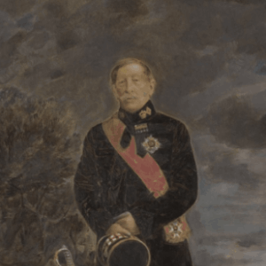
Alexander George Woodford
Sir Frederick Cavendish Ponsonby
George Cardew
Sir Thomas Evans
Sir Henry Bouverie
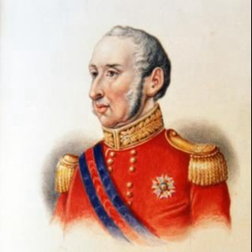
Sir Patrick Stuart
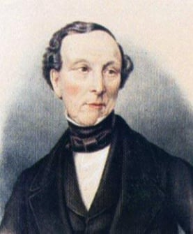
Richard More O'Ferrall
Robert Ellice
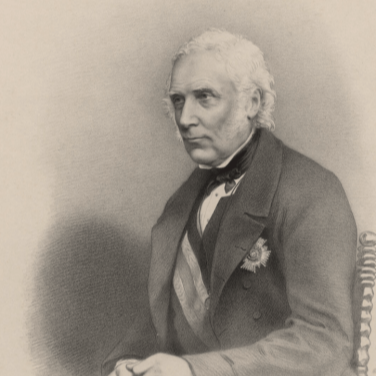
Sir William Reid
Sir John Le Marchant
Sir Henry Knight Storks
Sir Patrick Grant
Sir Charles van Straubenzee
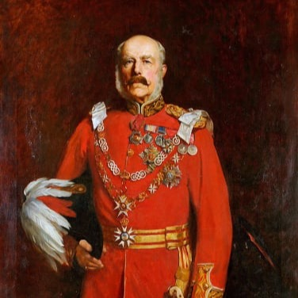
Sir Arthur Borton
Sir Lintorn Simmons
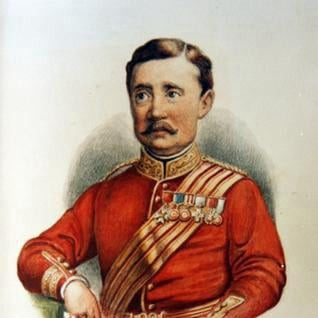
Sir Henry Torrens
General Sir Henry Augustus Smyth
Sir Arthur Lyon Fremantle
Sir Francis Grenfell
Sir Charles Clarke
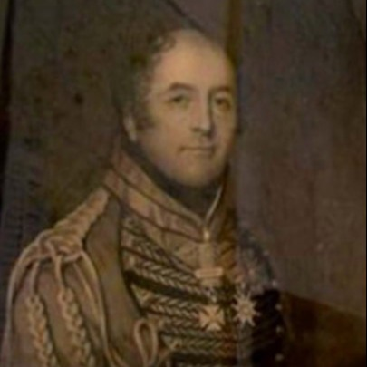
Sir Henry Grant
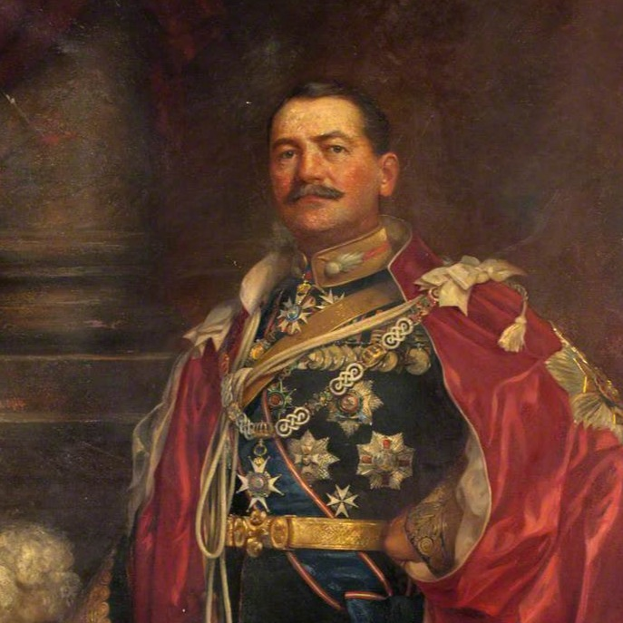
Sir Leslie Rundle
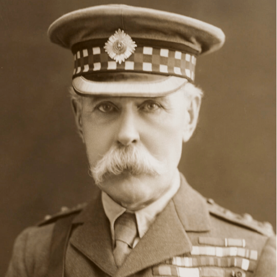
Paul Methuen
Herbert Plumer
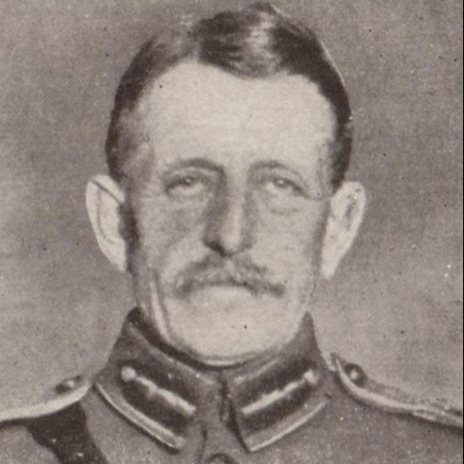
Sir Walter Congreve
Sir John Philip Du Cane
Sir David Campbell
Sir Charles Bonham-Carter
Sir William Dobbie
John Vereker
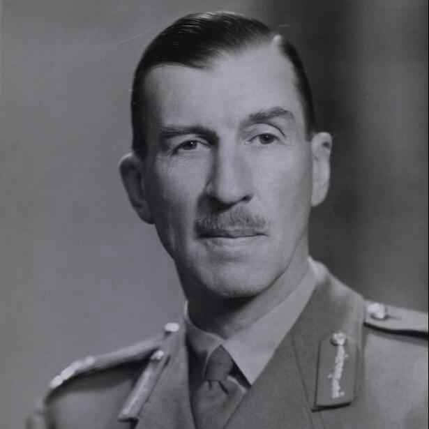
Sir Edmond Schreiber
Sir Francis Douglas
Sir Gerald Creasy
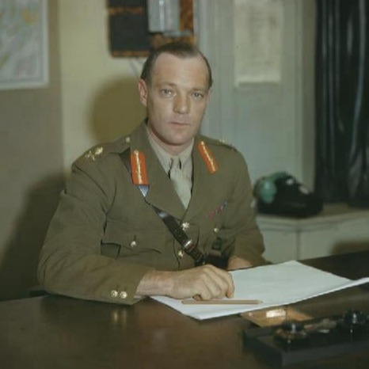
Sir Robert Laycock
Sir Guy Grantham
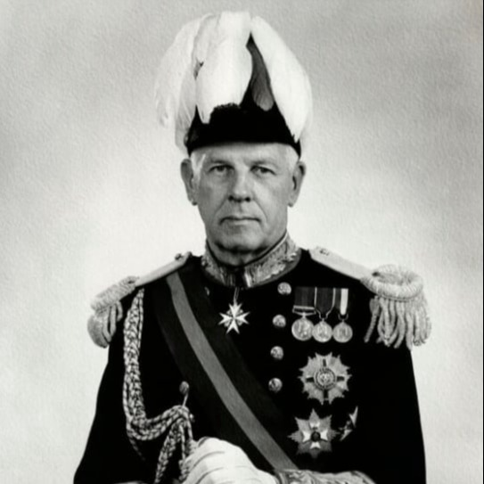
Sir Maurice Dorman
Help
Contact Us
Other Websites
FIFA World Cup
Movies
Music
TwidGrid
About
Discover Malta, Gozo and its other islands, its history, people and culture.
© Copyright 2024 TwidGrid - All Rights Reserved